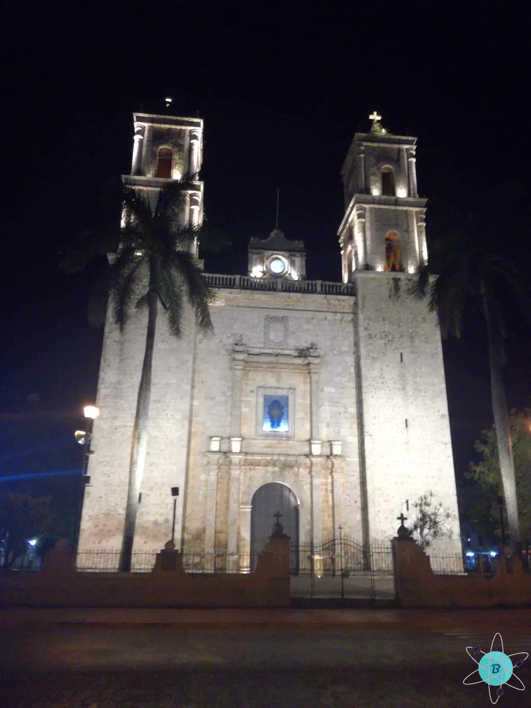

Riviera maya y sus playas cristalinas
Fecha del viaje: 26-03-2019
México tiene una gran cultura, pero si no quieres ir a visitar la capital por su frío o quizá no eres de los que le gusta caminar y conocer los museos, lugares históricos, edificios y obras de arte, puedes visitar la costa oriental del país en el estado de Yucatán, punta sur del golfo de México, en la cual se encuentran hermosas playas, lugares con una historia espectacular de los ancestros Mayas y diversión.
Primero puedes ir a Playa del Carmen una ciudad costera bastante divertida allí la zona más transcurrida y llena de turismo es la Quinta avenida, encontraras de todo lo que necesites, almacenes de marcas reconocidas, locales y puestos en la calle donde te venden todo tipo de artesanías, licores, souvenirs, catrinas decoradas y muchas cosas más, si quieres diversión, están las discotecas y bares, el más mencionado y conocido es el Coco Bongo, restaurantes nacionales e internacionales y murales con representaciones mexicanas. A una cuadra de la avenida está la playa su arena es blanca con algunas algas alrededor y corales, si no te quieres lastimar los pies lleva tus zapatos de agua ya que las piedras son grandes pero la playa ofrece una hermosa vista; al caminar por esta verás el muelle allí puedes tomar los barcos que te llevan a las otras islas como cozumel, hay una plazoleta de comidas rápidas donde ponen buena música para que pases un rato agradable con amigos o familia mirando el mar y disfrutando de la brisa, te recomiendo que pruebes la pizza del lugar tiene un sabor exquisito.
Si vas por la Riviera maya no olvides visitar uno o más de sus parques y si tienes el tiempo suficiente arriésgate, ¡no te arrepentirás!; nosotros escogimos el parque Xcaret fue una experiencia única y la verdad volveríamos a ir, es tan grande que un solo día no te alcanza para ver todas las atracciones. En la entrada entregan un mapa para ubicarse y escoger qué actividades realizar, ya que no hay una ruta específica para recorrerlo; si no llevas puesto tu vestido de baño te sugiero que lo primero que hagas al entrar es cambiarte porque hay varias actividades acuáticas que no querrás perderte. Mientras recorres el parque ahí letreros con los horarios de los eventos o actividades que hay y los puntos donde se hacen.
Algunas de las actividades que se hacen dentro del parque no están incluidas en la boleta comprada, por ejemplo nadar con los delfines, buceo snuba, interactuar con los tiburones, entre otros, además si deseas puedes adquirir un paquete de fotos; en todo el parque aparecerá una imagen de una cámara con la palabra “Escanea”, al acercar tu brazalete automáticamente se activa la cámara fotográfica para hacer la selfie, si adquieres este paquete aprovecha todas las cámaras del parque ya que están en puntos estratégicos y lo mejor es que son ilimitadas.
Se sugiere no llevar una maleta muy grande, aunque hay lockers para guardar la maleta, lo más recomendable es no visitar varias veces el locker a buscar cosas, llevar solo lo justo y necesario como el vestido de baño, los zapatos para el agua, toalla y ropa de cambio para que estés cómodo en la noche y disfrutar del evento de “México espectacular” que es todo un espectáculo.
Siguiendo por la costa esta Tulum y su zona arqueológica, era una ciudad amurallada de la cultura maya, ubicada en la zona oriente del estado de Quintana Roo, era uno de los puertos más importantes tanto que la ruta comercial abarcaba países como Guatemala, Honduras, Belice, El salvador y México; el recorrido tiene una duración máxima de dos horas y si estas de buenas puedes darte un chapuzón en el mar (Cuando nosotros fuimos no nos permitieron el ingreso a la playa que está dentro de la zona arqueológica). Una sugerencia es madrugar ya que se llena mucho de turistas y el calor es muy sofocante cuando sale el sol completamente.
Cerca se encuentra la playa paraíso es pública y hay establecimientos para comidas, bebidas y venta de tours para ir a ver los corales.
A dos horas de camino se encuentra Chichén Itzá otra zona arqueológica de la Península de Yucatán, por la carretera existe un punto de información donde te venden un paquete todo incluido (entrada a la zona arqueológica, cenote y almuerzo buffet), otra opción es ingresar por la zona turística que está a 7 minutos en carro por la carretera que va hacia Mérida, hay muchos vendedores que te ofrecen varios tours de diferentes precios. En el centro de la zona está la Pirámide de Chichén Itzá una de las nuevas siete maravillas del mundo moderno declarada en el año 2007 y como podrás ver se encuentra casi intacta por lo que restringieron la subida a la misma, al seguir por el sendero te encontrarás con el grupo de las mil columnas que anteriormente fue un templo, después sigue el gran juego de pelota aquí al dar unas palmadas se escucha un gran eco, alrededor hay varios templos y cada uno tiene su descripción correspondiente, por último está el cenote sagrado con una profundidad aproximada de 13 metros, con una distancia de 22 metros entre la superficie del agua y la orilla del cenote; en el camino hay muchos puestos para comprar los souvenirs que desees a bajo costo y de todos los tamaños y colores.
A 7 minutos en carro o a 40 minutos a pie de la zona arqueológica está el cenote Ik-Kil es muy transcurrido por lo que siempre lo encontrarás lleno de turistas, en la entrada puedes comprar la boleta o en la entrada de Chichén Itzá; puedes acceder a los lockers y a los vestidores, el chaleco salvavidas te lo alquilan por aprox. 1 dólar. La entrada al cenote es mediante unos escalones de piedra que al estar mojados son resbalosos por lo que no te olvides de llevar zapatos con una buena suela, el cenote tiene una profundidad de 50 metros, pero no te preocupes tiene cuerdas salvavidas de extremo a extremo, no hay tiempo límite por lo que disfrutarás de todo el rato que quieras y el agua es muy refrescante.
Al salir de cenote decidimos pasar la noche en Valladolid, en la plaza central encuentras puestos de comida y a un costado la iglesia de San Servacio su fachada es hermosa y destaca por sus dos torres, uno de los platos típicos de esta ciudad es la “Longaniza”, aunque también puedes encontrar variedad de platos y bebidas usualmente llamadas “aguas frescas”.
Como todo viaje lo ideal es aprovechar el tiempo al 100% así que madrugamos y cogimos carretera hacia Cancún, andar por las avenidas de la Riviera es fascinante pues son rectas y el camino está pavimentado, llegamos en menos de dos horas y aprovechamos para tomarnos fotos en el letrero de Cancún. Después de instalarnos cogimos camino hacia la terminal marítima de puerto Juárez, allí puedes comprar las boletas del transporte o los diferentes tours para Isla mujeres, antes de llegar a la isla se realizan diversas paradas, una es para realizar snorkel durante aproximadamente 15 minutos y después en playa norte aquí el agua es cristalina y la arena es blanca y suave, podrás hacer careteo o sin necesidad de las gafas observaras la variedad de peces; al arribar a isla mujeres puedes hacer un recorrido por el centro de la isla o quedarte en la playa disfrutando del sol. Un plato típico es el pescado a la tikin xic a la brasa con leña es imperdible si viajas a isla.
De vuelta en Cancún para terminar el día fuimos por unas cervezas, una recomendación es que pruebes la cerveza “Modelo” es deliciosa. Al siguiente día decidimos ir a la playa para ver el amanecer uno de nuestros planes preferidos, pasar un rato agradable y tranquilo escuchando las olas del mar y relajarnos para en la noche gozarnos de las discotecas que nos ofrece Cancún.
El último día o bueno nuestro medio día de este fantástico viaje aprovechamos para ir al mercado 28 aquí verás muchos locales donde encontrarás todo tipo de souvenirs como licores, dulces, playeras, bolsos, recuerdos, entre otros.
Tipyagers
- En el parque Xcaret te sugiero iniciar con los ríos pues son grandes y hay más de uno, para que los puedas disfrutar al máximo.
- En la oficina de la taquilla donde compras la entrada a Chichén Itzá puedes sellar tu pasaporte si te gusta coleccionar los sellos de las nuevas siete maravillas
- En el mercado 28 de Cancún también encuentras muchos restaurantes para desayunar, almorzar o probar los platos típicos de la ciudad.
- Madruga siempre que puedas así podrás disfrutar de todas las actividades que tienes planeadas y no tengas que hacer filas por la cantidad de turistas.
- Al estar en una zona costera no te olvides de llevar siempre puesto tu vestido de baño.
Presupuesto
Duración: 6 días y 5 noches Precio final del viaje: 1.194 Dólares (Los valores que se muestran a continuación son valores aproximados pues el valor de dólar está cambiando constantemente).